Desarrollo de servicios web
Vamos a desarrollar servicios a partir del documento WSDL. En el siguiente apartado vamos a ver cómo diseñarlo con el editor gráfico de Eclipse.
Diseño del documento WSDL
A la hora de diseñar el documento WSDL hay que tomar una serie de decisiones sobre el formato del mensaje. Una de ellas es el formato de binding que vamos a utilizar: rpc/encoded o document/literal. El modo rpc/encoded está desaprobado porque, aunque es un WSDL legal, no es compatible con WS-I. El problema que tiene es que no es fácil validarlo, debido a que contiene tags definidos en un schema, mientras que el resto del cuerpo contiene tags que provienen de definiciones WSDL. Por tanto a lo largo del curso utilizaremos siempre el binding document/literal.
Otra decisión a tomar es si pasar los parámetros en modo bare o modo wrapped (envuelto). De cara al código java, la principal diferencia es que en el modo bare, los parámetros deben introducirse en una única estructura de datos, como pasa en el ejemplo del HolaMundo:
Saluda entrada = new Saluda();
entrada.setNombre("Boyan");
SaludaResponse respuesta = servicio.saluda(entrada);
System.out.println(respuesta.getSaludaReturn( ));
En el modo wrapped, sin embargo, las llamadas serían así:
String respuesta = servicio.saluda("Boyan");
System.out.println(respuesta);
Para utilizar el estilo wrapped hay que dar el mismo nombre al element que contiene el complexType, y a la operación definida en el portType. En cuanto a los parámetros de respuesta, hay que llamar el element con el mismo nombre, concatenando "Response" al final, y ya no hay que indicar el tipo. El tipo irá indicado dentro del complexType definido en el element:
<?xml version="1.0" encoding="UTF-8" standalone="no"?>
<wsdl:definitions xmlns:soap="http://schemas.xmlsoap.org/wsdl/soap/"
xmlns:tns="http://jtech.ua.es/Servicio/"
xmlns:wsdl="http://schemas.xmlsoap.org/wsdl/"
xmlns:xsd="http://www.w3.org/2001/XMLSchema"
name="Servicio" targetNamespace="http://jtech.ua.es/Servicio/">
<wsdl:types>
<xsd:schema targetNamespace="http://jtech.ua.es/Servicio/">
<xsd:element name="saluda">
<xsd:complexType>
<xsd:sequence>
<xsd:element name="nombre" type="xsd:string" />
<xsd:element name="apellido" type="xsd:string" />
</xsd:sequence>
</xsd:complexType>
</xsd:element>
<xsd:element name="saludaResponse">
<xsd:complexType>
<xsd:sequence>
<xsd:element name="saludo" type="xsd:string"/>
</xsd:sequence>
</xsd:complexType>
</xsd:element>
</xsd:schema>
</wsdl:types>
<wsdl:message name="saludaRequest">
<wsdl:part element="tns:saluda" name="parameters"/>
</wsdl:message>
<wsdl:message name="saludaResponse">
<wsdl:part element="tns:saludaResponse" name="parameters"/>
</wsdl:message>
<wsdl:portType name="Servicio">
<wsdl:operation name="saluda">
<wsdl:input message="tns:saludaRequest"/>
<wsdl:output message="tns:saludaResponse"/>
</wsdl:operation>
</wsdl:portType>
<wsdl:binding name="ServicioSOAP" type="tns:Servicio">
<soap:binding style="document"
transport="http://schemas.xmlsoap.org/soap/http"/>
<wsdl:operation name="saluda">
<soap:operation soapAction="http://jtech.ua.es/Servicio/saluda"/>
<wsdl:input>
<soap:body use="literal"/>
</wsdl:input>
<wsdl:output>
<soap:body use="literal"/>
</wsdl:output>
</wsdl:operation>
</wsdl:binding>
<wsdl:service name="Servicio">
<wsdl:port binding="tns:ServicioSOAP" name="ServicioSOAP">
<soap:address location="http://localhost:8080/"/>
</wsdl:port>
</wsdl:service>
</wsdl:definitions>
Vamos a diseñar este archivo WSDL con el editor gráfico de Eclipse. Primero podemos crear un nuevo proyecto y añadirle las dependencias de CXF como ya se ha visto, o bien copiar el proyecto HolaMundoCliente a un nuevo proyecto que llamaremos SWCliente. Eliminamos el documento WSDL actual y en la misma carpeta (src/main/resources) creamos un nuevo WSDL usando el asistente: New / Other / Web Services / WSDL. Lo llamamos Servicio y pulsamos Next. En la siguiente pantalla, como Target namespace vamos a indicar http://jtech.ua.es/Servicio/, y vamos a dejar el resto de opciones con los valores por defecto:
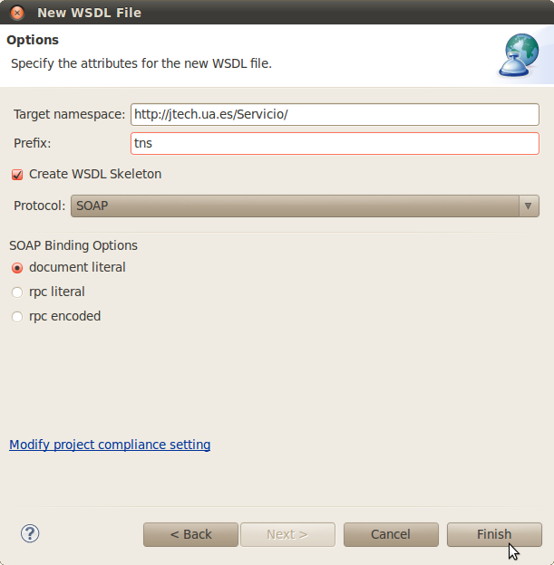
El nuevo fichero queda abierto, y puede verse o bien en modo xml, o bien en modo de diseño. En el modo de diseño podemos ver el servicio con el nombre del puerto y el endpoint, conectados con la interfaz que define los parámetros de entrada y de salida. Vamos a cambiar el endpoint por defecto e introducir http://localhost:8080/. También vamos a cambiar el nombre de la operación a saluda. Automáticamente se cambiarán los nombres de los parámetros de entrada y de salida, quedando la figura así:
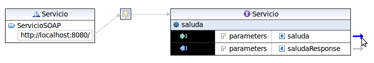
Ahora vamos a pulsar sobre la flecha que hay a la derecha del parámetro de entrada saluda, y entraremos en el "Inline schema of Servicio.wsdl".
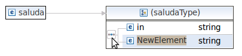
Pulsamos sobre los tres puntos que significan "secuencia", y con el menú contextual pulsamos "Add element". Vamos a cambiar los nombres de los dos elementos de la secuencia para que sean "nombre" y "apellido":
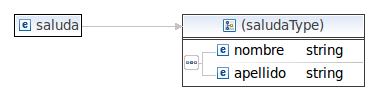
Guardamos y cerramos, volviendo a la pestaña con la vista general del documento. De la misma manera entramos en la definición del parámetro de salida, el saludaResponse, donde podemos cambiar el nombre por defecto, "out" a "saludo".
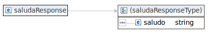
Guardamos y cerramos esta pestaña, y si ahora editamos el WSDL en modo XML, veremos que coincide con el anteriormente listado. En la vista de los paquetes hacemos click con el botón derecho sobre el Servicio.wsdl y pulsamos Validate, que debe darnos el mensaje de que no ha habido ningún error de validación.
Cliente con CXF
Ahora podemos generar el nuevo cliente. Para ello borramos el paquete es.ua.jtech.servcweb.hola.sw y cambiamos el archivo GeneraCodigo.java para que lea el nuevo WSDL:
"src/main/resources/Servicio.wsdl"
Lo ejecutamos y refrescamos el proyecto. Abrimos el archivo cliente, el Servicio_ServicioSOAP_Client.java e introducimos dos cadenas en los parámetros de la llamada del servicio:
System.out.println("Invoking saluda...");
java.lang.String _saluda_nombre = "Boyan";
java.lang.String _saluda_apellido = "Bonev";
java.lang.String _saluda__return = port.saluda(
_saluda_nombre, _saluda_apellido);
System.out.println("saluda.result=" + _saluda__return);
Ya tenemos hecho el cliente con CXF, ahora vamos a generar el servicio.
Servicio con CXF
Copiamos el proyecto SWCliente y lo pegamos con el nombre SWServicio. Eliminamos el paquete es.ua.jtech.servcweb.hola.sw y editamos el GeneraCodigo.java para que genere el código del servicio:
WSDLToJava.main(new String[]{
"-server",
"-d","src/main/java",
"src/main/resources/Servicio.wsdl"
});
Lo ejecutamos y refrescamos. Nos marca un error en Servicio_ServicioSOAP_Server.java porque no tenemos la implementación de la interfaz del servicio.
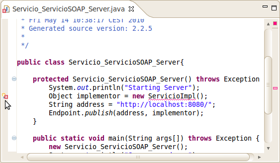
Haciendo click sobre la señal de error nos sugiere, entre las primeras opciones, "Create class 'ServicioImpl'". La seleccionamos y en el asistente de creación de nueva clase, añadimos la interfaz que ésta debe implementar, es.ua.jtech.servicio.Servicio:
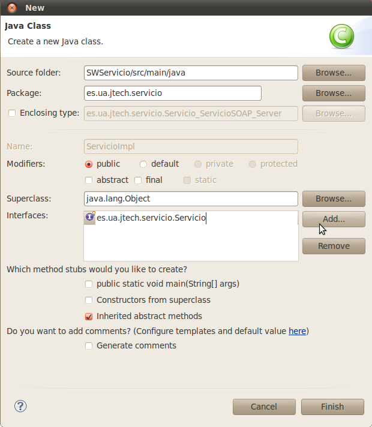
Pulsamos Finish y completamos el código de la implementación, haciendo que devuelva un saludo hacia el nombre + apellido, con el nombre abreviado (primer carácter).
package es.ua.jtech.servicio;
public class ServicioImpl implements Servicio {
@Override
public String saluda(String nombre, String apellido) {
return "¡Hola, "+nombre.substring(0,1) + ". " + apellido + "!";
}
}
Guardamos, y ejecutamos el servidor, que se encuentra en el archivo Servicio_ServicioSOAP_Server.java (lo ejecutamos como Java Application). Debe arrancar, lanzando por la salida estándar una serie de mensajes tales como:
Starting Server
14-may-2010 16:20:58 org.springframework.context.support.
AbstractApplicationContext prepareRefresh
INFO: Refreshing org.apache.cxf.bus.spring.BusApplicationContext@169e11:
display name [org.apache.cxf.bus.spring.BusApplicationContext@169e11];
startup date [Fri May 14 16:20:58 CEST 2010]; root of context hierarchy
[...]
INFO: Creating Service {http://servicio.jtech.ua.es/}ServicioImplService
from class es.ua.jtech.servicio.Servicio
14-may-2010 16:21:01 org.apache.cxf.endpoint.ServerImpl initDestination
INFO: Setting the server's publish address to be http://localhost:8080/
14-may-2010 16:21:01 org.mortbay.log.Slf4jLog info
INFO: Logging to org.slf4j.impl.JDK14LoggerAdapter(org.mortbay.log) via
org.mortbay.log.Slf4jLog
14-may-2010 16:21:01 org.mortbay.log.Slf4jLog info
INFO: jetty-6.1.21
14-may-2010 16:21:02 org.mortbay.log.Slf4jLog info
INFO: Started SelectChannelConnector@localhost:8080
Server ready...
En caso de que ocurra algún error, el más común es el de que el puerto (en este caso el 8080) esté ocupado. Eso suele ocurrir durante el desarrollo porque nos dejamos otro proceso de servidor en ese puerto. Se trataría de localizar qué proceso es y terminarlo, o bien utilizar otro puerto diferente.
Nota: el servidor está configurado para que por defecto se apague y termine el proceso (con el mensaje "Server exiting" en consola), una vez pasados 5 minutos, ya que la función main es:
public static void main(String args[]) throws Exception {
new Servicio_ServicioSOAP_Server();
System.out.println("Server ready...");
Thread.sleep(5 * 60 * 1000);
System.out.println("Server exiting");
System.exit(0);
}
Se puede modificar este código para cambiar este comportamiento. Por otro lado, si queremos matar el proceso del servidor (necesitaremos hacerlo si realizamos un cambio y queremos volver a probarlo), podemos hacer click en el botón de la consola, para cambiar a la consola asociada al proceso, y entonces veremos que se ilumina el botón rojo de stop, en caso de que el proceso todavía esté en ejecución. Pulsamos el botón de stop y el proceso termina (liberándose también el puerto 8080, en nuestro caso).
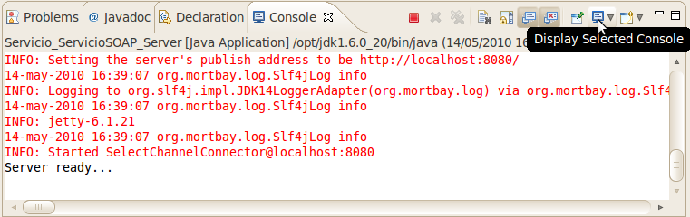
Ahora podemos lanzar el cliente para que establezca la comunicación con el servidor. En el proyecto SWCliente, ejecutamos como aplicación java el fichero es.ua.jtech.servicio.Servicio_ServicioSOAP_Client.java.
El resultado debe ser:
[...]
14-may-2010 16:33:51 org.apache.cxf.service.factory.
ReflectionServiceFactoryBean buildServiceFromWSDL
INFO: Creating Service {http://jtech.ua.es/Servicio/}Servicio from WSDL:
file:src/main/resources/Servicio.wsdl
Invoking saluda...
saluda.result=¡Hola, B. Bonev!
También podemos comprobar con nuestro navegador cómo el servicio ofrece el documento WSDL en la dirección http://localhost:8080/saluda?wsdl:
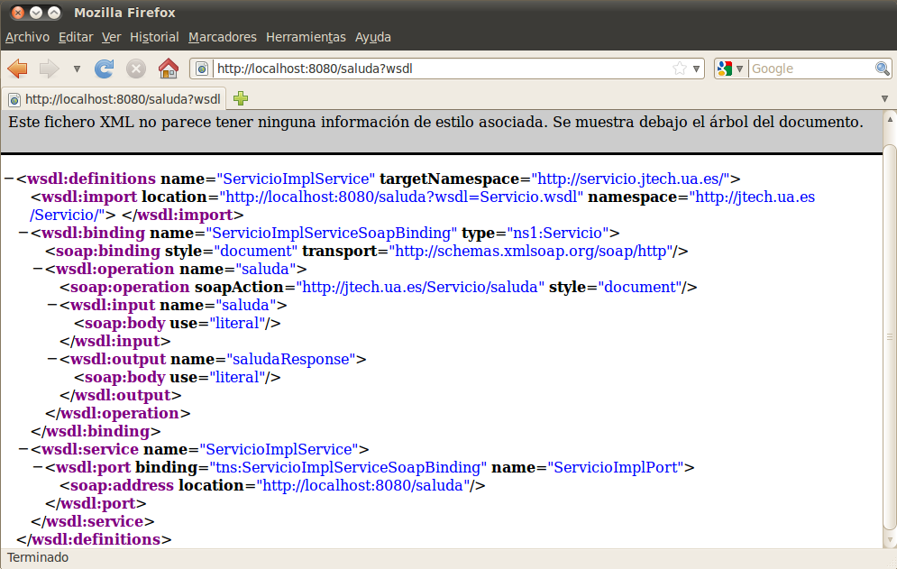
Cliente con Axis2
Aunque ya hemos visto cómo generar clientes con Axis2, aquí vamos a introducir un parámetro más en la generación del código, que indicará que los parámetros son de tipo Wrapped. Empezamos copiando el proyecto Axis2HolaMundoCliente y pegándolo con el nombre Axis2SWCliente. Eliminamos el documento WSDL que contiene y los tres paquetes de la carpeta src/main/java. Ahora creamos una nueva clase en src/main/java, e indicamos al asistente que la ponga en el paquete es.ua.jtech.servcweb.generador, que la llame GeneraCodigo, y que cree el método main.
Introducimos la llamada al método WSDL2Code.main, pero esta vez con el parámetro "-uw" adicional, que indica que hay que realizar el "unwrapping" de los parámetros. También cambiamos el nombre del documento WSDL a Servicio.wsdl. El GeneraCodigo.java debe quedar así:
package es.ua.jtech.servcweb.generador;
import org.apache.axis2.wsdl.WSDL2Code;
public class GeneraCodigo {
public static void main(String[] args) throws Exception {
WSDL2Code.main(new String[]{
"-uw",
"-S","src/main/java",
"-uri","src/main/resources/Servicio.wsdl"
});
System.out.println("Generado, no olvide hacer Refresh.");
}
}
Copiamos el Servicio.wsdl a la carpeta de recursos, ejecutamos y refrescamos. Ahora nos falta hacer un cliente ejecutable que realice la llamada al servicio web. Creamos una nueva clase que llamamos SWCliente y que está en el paquete es.ua.jtech.servcweb.llamada. Marcamos la casilla de creación del método main.
Introducimos la llamada a ServicioStub, dejando que Eclipse nos autocomplete los métodos. Descubriremos que existe el método saluda que acepta Strings y devuelve también un String. El código queda así:
package es.ua.jtech.servcweb.llamada;
import java.rmi.RemoteException;
import es.ua.jtech.servicio.ServicioStub;
public class SWCliente {
public static void main(String[] args) throws RemoteException {
ServicioStub servicio = new ServicioStub(
"http://jtech.ua.es/HolaMundo/services/HolaMundoSW");
System.out.println(servicio.saluda("Boyan", "Bonev"));
}
}
Compárese con la versión de Axis2HolaMundoCliente, donde se utilizan parámetros bare en lugar de wrapped.
Servicio con Axis2
Ahora pasamos a crear el servicio. Copiamos el proyecto Axis2SWCliente y lo pegamos como Axis2SWServicio. Eliminamos los paquete es.ua.jtech.servcweb.llamada y es.ua.jtech.servicio y editamos GeneraCodigo.java para que genere el servidor, con el parámetro "-uw" incluido:
package es.ua.jtech.servcweb.generador;
import org.apache.axis2.wsdl.WSDL2Code;
public class GeneraCodigo {
public static void main(String[] args) throws Exception {
WSDL2Code.main(new String[]{
"-ss",
"-sd",
"-uw",
"-S","src/main/java",
"-R","src/main/resources/META-INF",
"-uri","src/main/resources/Servicio.wsdl"
});
System.out.println("Generado, no olvide hacer Refresh.");
}
}
Lo ejecutamos y refrescamos el proyecto.
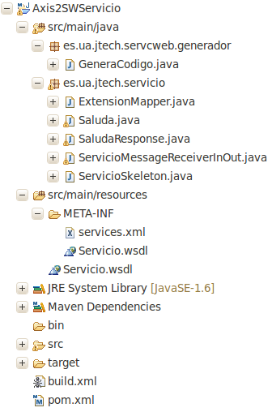
La clase es.ua.jtech.servicio.ServicioSkeleton es la que debemos editar para introducir la operación que realiza el servicio. Eliminamos la excepción que por defecto lanza la función saluda( ), e introducimos nuestro return:
public java.lang.String saluda
(
java.lang.String nombre,java.lang.String apellido
)
{
return "¡Hola, "+nombre.charAt(0)+". "+ apellido+"!";
}
Hasta este punto el proyecto no debería dar ningún error. Si es así, hemos terminado y debemos generar un paquete AAR, que es la extensión por defecto para los paquetes de servicios que se ejecutan en el servidor de Axis2. Para generar el paquete debemos ejecutar el proyecto como paquete de Maven: botón derecho, Run as / Maven package.
Nota: si nos aparece en consola el error:
[ERROR] Error executing Maven.
[ERROR] The specified user settings file does not exist:
/home/servicios/.m2/settings.xml
es debido a un bug de Maven. Para solucionar el problema crearemos un archivo XML vacío en cuanto a contenido XML. Creamos en nuestra carpeta
~/.m2/ el archivo settings.xml
La carpeta es la que indica el error. En nuestro la ruta completa del archivo sería
/home/servicios/.m2/settings.xml
El archivo deberá contener lo siguiente:
<settings xmlns="http://maven.apache.org/SETTINGS/1.0.0" xmlns:xsi="http://www.w3.org/2001/XMLSchema-instance" xsi:schemaLocation="http://maven.apache.org/SETTINGS/1.0.0 http://maven.apache.org/xsd/settings-1.0.0.xsd"> </settings>
Volvemos a ejecutar el proyecto como Maven package y, si no hay problemas de conexión a la red, se descargan las dependencias necesarias y se genera el paquete, obteniendo una salida en consola como la siguiente:
[INFO] Scanning for projects...
[INFO]
[INFO] ----------------------------------------------------
[INFO] Building Unnamed - SWServicio:SWServicio:jar:
0.0.1-SNAPSHOT 0.0.1-SNAPSHOT
[INFO] ----------------------------------------------------
[INFO]
[INFO] --- maven-resources-plugin:2.4.1:resources (default-
resources) @ SWServicio ---
[WARNING] Using platform encoding (UTF-8 actually) to copy
filtered resources, i.e. build is platform dependent!
[INFO] Copying 3 resources
[...]
[INFO] --- maven-jar-plugin:2.2:jar (default-jar) @
SWServicio ---
[INFO] Building jar: /home/servicios/workspace/
Axis2SWServicio/target/SWServicio-0.0.1-SNAPSHOT.jar
[INFO] ----------------------------------------------------
[INFO] BUILD SUCCESS
[INFO] ----------------------------------------------------
[INFO] Total time: 3.583s
[INFO] Finished at: Sat May 15 20:17:50 CEST 2010
[INFO] Final Memory: 7M/17M
[INFO] ----------------------------------------------------
El archivo generado está en un paquete de tipo JAR, en la ruta:
/home/servicios/workspace/Axis2SWServicio/
target/SWServicio-0.0.1-SNAPSHOT.jar
como indica la salida de la consola.
Una vez que instalemos Axis2, copiaremos este .jar cambiándole la extensión a .aar. Este archivo contiene todos los recursos del proyecto, incluidas las clases, el documento WSDL y la carpeta META-INF.
Instalación de Axis2
Tenemos dos formas de utilizar Axis2: o bien integrado con Tomcat, o bien utilizando directamente el proceso de Axis2 como servidor de http. En los próximos ejemplos vamos a utilizar Axis2 sin Tomcat.
El servidor de Axis2 se puede descargar desde la web oficial: http://ws.apache.org/axis2/ Descargamos la Binary distribution, la versión 1.5.1. Descomprimimos el archivo axis2-1.5.1-bin.zip en alguna ruta, por ejemplo, en nuestro home: /home/servicios. Abrimos una terminal y entramos en la carpeta ~/axis2-1.5.1/bin:
cd ~/axis2-1.5.1/bin
donde tendremos que ejecutar el archivo axis2server.sh, pero antes de hacerlo vamos a comprobar si la variable de entorno JAVA_HOME contiene la ruda del JDK:
echo $JAVA_HOME
Si muestra una ruta, por ejemplo,
/opt/jdk1.6.0_20/
entonces está configurada (siempre y cuándo esta sea la ruta correcta del JDK). En caso contrario tendremos que añadir la instrucción
export JAVA_HOME=/opt/jdk1.6.0_20/
o bien en las primeras líneas del archivo axis2server.sh, o bien en las primeras líneas del archivo
~/.bashrc
Se recomienda la segunda opción, pero una vez hecho, habrá que abrir una nueva terminal para que el archvio .bashrc sea ejecutado al abrirla. Si no ha habido ningún error, el script que lanza el servidor de Axis2, detectará la variable de entorno y podrá arrancar. Lo probamos (desde la carpeta bin/ del directorio donde se encuentra axis2):
./axis2server.sh
Nota: Si no tiene permisos de ejecución los añadimos con chmod a+x axis2server.sh
El servidor arranca mostrando una salida como la siguiente:
servicios@servicios:~/axis2-1.5.1/bin$ ./axis2server.sh
Using AXIS2_HOME: /home/servicios/axis2-1.5.1
Using JAVA_HOME: /opt/jdk1.6.0_20/
[INFO] [SimpleAxisServer] Starting
[INFO] [SimpleAxisServer] Using the Axis2 Repository/home/
servicios/axis2-1.5.1/repository
[SimpleAxisServer] Using the Axis2 Repository/home/servicios/
axis2-1.5.1/repository
[SimpleAxisServer] Using the Axis2 Configuration File/home/
servicios/axis2-1.5.1/conf/axis2.xml
[INFO] Clustering has been disabled
[INFO] Deploying module: metadataExchange-1.5.1 - file:/home/
servicios/axis2-1.5.1/repository/modules/mex-1.5.1.mar
[INFO] Deploying module: ping-1.5.1 - file:/home/servicios/
axis2-1.5.1/repository/modules/ping-1.5.1.mar
[INFO] Deploying module: mtompolicy-1.5.1 - file:/home/servicios/
axis2-1.5.1/repository/modules/mtompolicy-1.5.1.mar
[INFO] Deploying module: script-1.5.1 - file:/home/servicios/
axis2-1.5.1/repository/modules/scripting-1.5.1.mar
[INFO] Deploying module: soapmonitor-1.5.1 - file:/home/
servicios/axis2-1.5.1/repository/modules/soapmonitor-1.5.1.mar
[INFO] Deploying module: addressing-1.5.1 - file:/home/servicios/
axis2-1.5.1/repository/modules/addressing-1.5.1.mar
[INFO] Deploying module: metadataExchange-1.5.1 - file:/home/
servicios/axis2-1.5.1/lib/mex-1.5.1.jar
[INFO] Deploying Web service: version.aar - file:/home/servicios/
axis2-1.5.1/repository/services/version.aar
[INFO] [SimpleAxisServer] Started
[SimpleAxisServer] Started
[INFO] Listening on port 8080
Para desplegar el servicio Axis2 que acabamos de crear, abrimos una nueva terminal (no cerramos la otra, de lo contrario mataríamos el proceso de axis) y copiamos el .jar que Maven generó, con extensión .aar en la carpeta repository/services/ de la carpeta de axis:
cp /home/servicios/workspace/Axis2SWServicio/target/
SWServicio-0.0.1-SNAPSHOT.jar ~/axis2-1.5.1/repository/
services/SWServicio.aar
Ahora observamos la salida de axis2 que mantenemos ejecutado en la otra terminal, y vemos que pasados pocos segundos, el servidor detecta el archivo y despliega el servicio:
[INFO] Deploying Web service: SWServicio.aar - file:/home/servicios/axis2-1.5.1/repository/services/SWServicio.aar
Ahora podemos abrir el navegador web y empezar accediendo a la url http://localhost:8080/, que nos redirigirá a http://localhost:8080/axis2/services/, donde veremos una lista de los servicios desplegados. Uno de ellos deberá ser nuestro Servicio y si hacemos click sobre su título, se mostrará el documento WSDL que define:
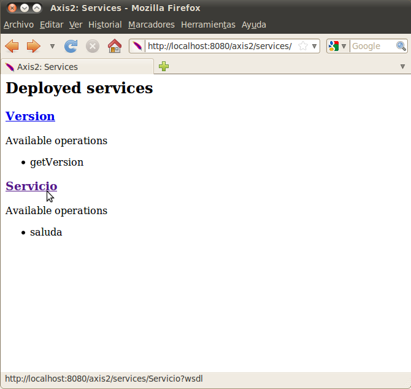
Tan sólo nos falta probar el cliente que ya tenemos preparado para este servicio. Abrimos el archivo es.ua.jtech.servcweb.llamada.SWCliente.java del proyecto Axis2SWCliente y cambiamos el endpoint del servicio a "http://localhost:8080/axis2/services/Servicio":
package es.ua.jtech.servcweb.llamada;
import java.rmi.RemoteException;
import es.ua.jtech.servicio.ServicioStub;
public class SWCliente {
public static void main(String[] args) throws RemoteException {
ServicioStub servicio = new ServicioStub(
"http://localhost:8080/axis2/services/Servicio");
System.out.println(servicio.saluda("Boyan", "Bonev"));
}
}
Lo ejecutamos y obtenemos por consola:
¡Hola, B. Bonev!
Si en el servicio hubiera ocurrido alguna excepción de Java, hubiéramos podido verla en la terminal donde está ejecutándose el servidor de Axis2.
Ejercicios
Validación de NIFs
Vamos a implementar un servicio con una serie de métodos que nos permitan validar un NIF. El servicio tendrá como nombre ValidaDniSW, y estará dentro de un proyecto DNIServicio. Se pide:
a) Implementar la siguiente operación:
boolean validarDni(String dni)
Esta función tomará como entrada un DNI, y como salida nos dirá si es correcto o no. El resultado será true si el DNI es correcto (está formado por 8 dígitos), y false en caso contrario. Podemos utilizar un código similar al siguiente para validar el DNI:
Pattern pattern = Pattern.compile("[0-9]{8,8}");
Matcher matcher = pattern.matcher(dni);
return matcher.matches();
b) Implementar la siguiente operación:
char obtenerLetra(String dni)
Esta función tomará como entrada un DNI, y como salida nos dirá la letra que corresponde a dicho DNI. Lo primero que deberá hacer es validar el DNI (puede utilizar para ello el método definido en el apartado anterior), y en caso de no ser correcto lanzará una excepción de tipo DniFaultException (que deberemos crear) indicando el mensaje de error adecuado. Una vez validado, calcularemos la letra que corresponda al DNI. Para ello deberemos:
- Obtener el índice de la letra correspondiente con:
dni % 23
- La letra será el carácter de la siguiente cadena que esté en la posición obtenida anteriormente:
"TRWAGMYFPDXBNJZSQVHLCKE"
c) Implementar la siguiente operación:
boolean validarNif(String nif)
Esta función tomará como entrada un NIF, y como salida nos dirá si es correcto o no. El resultado será true si el NIF es correcto (está formado por 8 dígitos seguidos de la letra correcta), y false en caso contrario. Para hacer esta comprobación se pueden utilizar las dos funciones anteriores: se comprobarán los 8 primeros caracteres con la función validarDni y posteriormente se comprobará si la letra es la correcta utilizando la función obtenerLetra.
d) Implementar un cliente Java que acceda a dicho servicio e invoque la operación obtenerLetra. El cliente deberá crearse en un proyecto DNICliente. Tened en cuenta que debéis capturar la excepción que hemos definido en el apartado (b). La clase correspondiente del stub la podéis ver en Files, dentro del directorio build, con el sufijo _Exception.